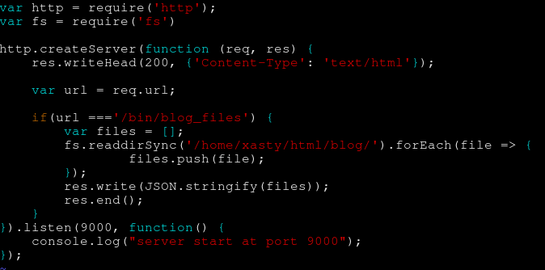
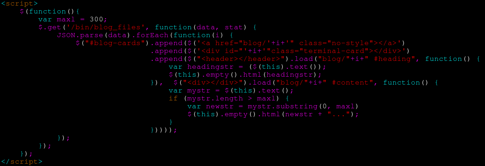

Hello and welcome to my first blog post! Here i shall explain how the blog, which you are currently seeing, works.
So i wanted to have something simple and easy to use. The main idea was to have a folder blog/ on my webserver in which all blogposts are stored.
Then i wanted to display them all on my homepage. I figuered that i'll just use JQuerys ajax feature for loading in the headings and parts of the contents.
Here i ran into the first problem. You cant get folders contents from the server with just client-side javascript. This is were NodeJs comes in.
I wrote a small http route at bin/blog_files which just provides all filenames from the blog folder inside of an array.
As you can see in the snippet below, very simple stuff.

After the route was finished all that was left was to display each blog entry as an card on the homepage. This turned out to be much more complex that anticipated.
Im using
Jonas Duris amazing
terminalcss on my website and for my blog im using the cards.
They are wrapped in an link tag. So there is quite a lot of html that i need to generate with JQuery. After alot of trial and error i finally came up with this monster:

So what in gods name is going on here? Well first of all i use my route to get all the filenames. These then get parsed and for each of them a new card is generated.
It looks more complicated than it is. At first the a tag is generated. Then i append the card div into it. Then we append the header into that after we load the heading from the corrosponding html file. Then in the same append we also grab the whole content from the blog post and cut it so that only the first 300 chars are appended. After that there is a shitload of brackets. And boom, it works.